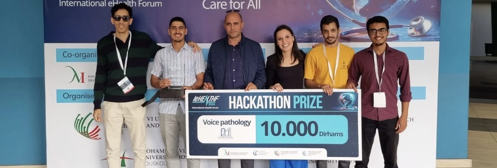

Université Mohammed V de Rabat · Faculté des Sciences de Rabat
Laboratoire de Recherche en
Informatique et Télécommunications
Recherche et formation doctorale en informatique, traitement du signal et télécommunications.
À la une

30 juin 2025 · Prix et distinctions
Green Up Challenge IA — Trophée Redal de l’innovation
Premier prix du hackathon Green Up Challenge IA, recensé dans les distinctions du laboratoire.

31 octobre 2024 · Prix et distinctions
Hackathon International eHealth Forum — L’ère de la santé digitale
L’équipe LRIT a remporté le premier prix du hackathon avec le projet Voice Pathology.
Axes de recherche
Publications ↗Annuaire
Agenda et archives
Toutes les manifestations ↗Thèses soutenues
- Hadri HabibaContribution a la sécurité des réseaux véhiculaires : Etude et détection des attaques Sybil
- Lafhel MajdaMovie Genre Classification and Similarity Analysis Using Complex Networks and Graph Deep Learning
- Bendahmane NadaDétection des acteurs influents dans les réseaux sociaux